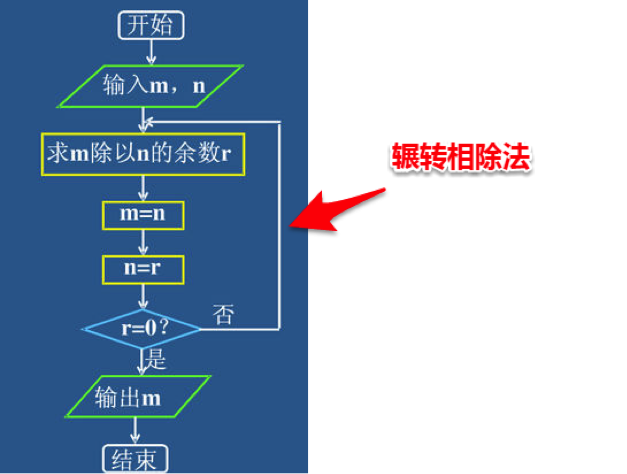

第一节：精讲
1.作用域
什么是作用域，变量在函数内部作用的范围／区域。有函数的地方就有作用域
2.局部作用域和全局作用域
function fn(){
var a = 1;
}
console.log(a); //报错：a is not defined
用var声明的变量，实际上是有作用域的
在函数内部定义的变量，该变量的作用域是整个函数体，在函数体外不可引用该变量，这是局部作用域
变量的生命周期：
1.永远存在－－－－全局
程序没关，一直占用内存，少用全局
2.朝生暮死－－－－局部
函数的大括号开头到函数的大括号结尾
var a = 1;
function fn(){
console.log(a); //1
}
console.log(a); //1
不在任何函数内定义的变量就具有全局作用域。全局变量在任何地方都能调用。
扩展：javascript默认有个全局对象window，全局作用域的变量实际上被绑定到window的一个属性
3.声明提升
变量声明提升：
console.log(a) //undefined已经声明但是未赋值
var a = 2;
console.log(a) //2
consoleo.log(b) //not a defined未声明
function fn(){
console.log(a) //undefined
var a = 1;
}
fn();
在函数fn()中，在没有定义变量之前打印a，得到undefined，而并不是not defined
说明此时变量已经被声明，只是还没有被赋值。
上面的fn()函数可以理解成
function fn(){
var a;
console.log(a);
a = 1;
}
fn();
我们称这种现象为变量的声明提升，所有使用var声明的变量会在当前作用域最开始的部分被声明。
函数的声明提升
fn(); ======//2
function fn(){
console.log(2);
}
fn();=======//2
console.log(fn); //undefined
fn(); //not a function
var fn = function(){
console.log(1);
}
2.JS的编译和执行
先检查语法错误－－－语法错误，当前代码段不执行
声明提升－－－－－－变量提升和函数提升，作用域内所有使用var声明的变量和非匿名函数
开始编译－－－－－－逐行执行
函数声明提升：
fn(); //1
function fn(){
console.log(123);
}
但是：
fn(); //报错：fn is not a function
var fn = function(){
console.log(123);
}
以上写法等于：
var fn; //此时声明变量fn，未定型和存值
fn(); //所以此时的fn不是一个函数，不能使用执行函数的方式执行，强行执行会报错
fn = function(){ //此时才对fn赋值函数
console.log(123);
}
fn(); //这时就可以执行了
4.递归函数
什么是递归？
就是在函数体内调用本函数。是一种调用模式，是一种逻辑程序基础的体现。
递归会消耗大量内存，在实际开发中很少使用
使用代码，表达思维
注意：递归最重要的是终止条件。
第二节：应用
1.利用递归求100的阶乘（1*2*3*4*5*…*99*100）
阶乘10! ＝ 10*9*8*7*6*5*4*3*2*1
function fn(n){
if(n == 1){
return 1;
}else{
return fn(n-1) * n;
}
}
fn(3);
2.利用递归求斐波那契数列（1，1，2，3，5，8，13，21，34，55，89...）
斐波那契数列：1，1，2，3，5，8，13，21
function fn(n){
if(n == 1 || n == 2){
return 1;
}else{
return fn(n-1) + fn(n-2);
}
}
console.log(fn(30));
3.利用递归求两个数字最大公约数

第三节：精讲
1.利用事件触发函数执行？
主要用于和用户产生一定的交互，提高页面或程序的交互性。
事件和函数之间的关系
当触发事件的时候，执行函数－－－－－－－按下制冷按钮，空调吹冷风
事件－－－－调用－－－－函数
2.常见事件触发函数？
常见事件：
是一种可以被js侦测到的行为－－－－－－－－按下遥控器上的开关，空调打开
在JS中常见的事件有：
鼠标点击－－－－－－－－onclick
鼠标双击－－－－－－－－ondblclick
页面或图片加载－－－－－onload
鼠标移入－－－－－－－－onmouseover
鼠标离开－－－－－－－－onmouseout
元素获得焦点－－－－－－onfocus
元素失去焦点－－－－－－onblur
键盘事件
……
所有事件在这里：
4.构造函数及对象类型（了解）
可以构造某件东西的函数
var str = "123”; //字面量方式生成
console.log(str); //123
console.log(typeof str); //string
var str = new String("123”); //构造函数方式生成
console.log(str); //[1,2,3,…]
console.log(typeof str); //object
构造函数只会产生对象，构造函数是用来构造对象的函数
构造函数用来构造对象，对象被用来编程，面向对象向编程
一种新的调用函数的方式
第四节：应用
1.编写一个函数，输入n为偶数时，调用函数求1/2+1/4+...+1/n,当输入n为奇数时，调用函数求1+1/3+...+1/n
2.使用函数完成任意数字阶乘的计算
要求：页面输入任意数字，点击按钮后计算阶乘
第五节：综合应用
周六日练习
1.常见事件与函数的结合（将信息打印在控制台）

匿名函数
闭包
自由变量